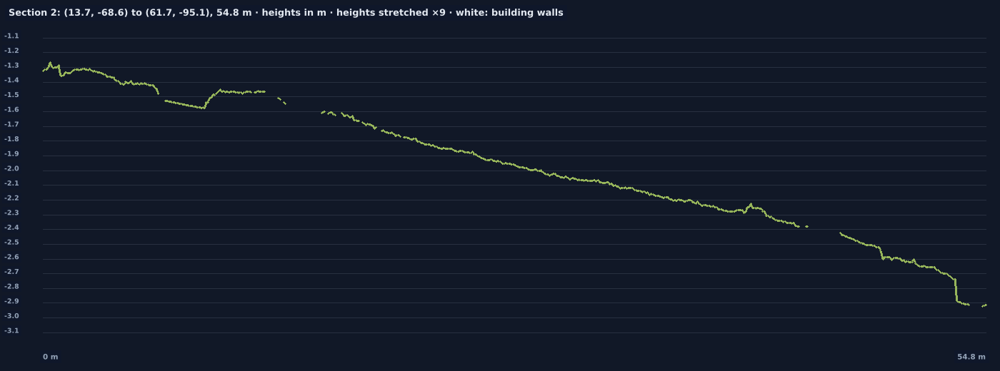

Ready
Measure building heights, roof edges and sections through the site
Every building wall's top is measured against the ground at its foot, and any line you draw across the site becomes a section: the ground along it, with the walls it crosses at their measured height. For the demonstration, we scanned the administration building at the University of Idaho.
1 · A real result


16.2 mtallest wall top above its foot
14.6 – 15.9 mthe main facades' tops
8.2 – 8.4 mthe lower wing
3 mfall of the ground across the site

2 · What you receive
- Each wall's top above the ground at its foot (in the walls table) and the tallest on the site.
- Sections along the lines you choose, as pictures and as CSV (distance, position and ground height every 10 cm).
- The walls on a DXF plan, in metres.
Open the full report for this site.
3 · What it takes on site
- Stations far enough from each wall to see its top: about as far away as the wall is tall, where the site allows.
- Ground seen in front of each wall, so its foot is known.
- Section lines can be chosen afterwards, at the desk, as often as you like.
4 · How sure
- The top of what was seen from the ground. That is a parapet or a roof edge, not a roof behind it; a roof needs a scan from above.
- The foot is the ground just in front of the wall, 0.5 to 1.5 m out; a step or a bed there moves it.
- Repeatable, not yet calibrated against an independent height measurement.